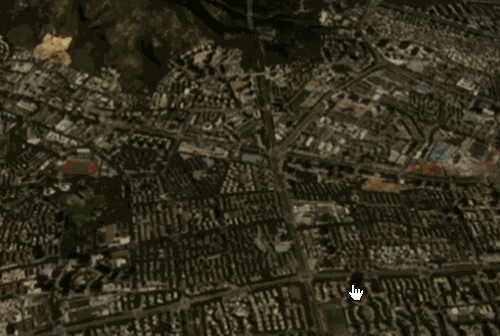
快速入门
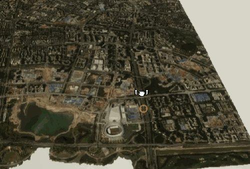
工程初始化
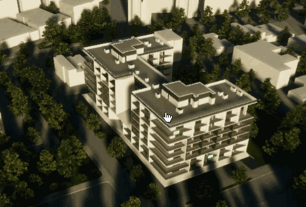
设置事件监听
设置镜头位置
获取镜头位置
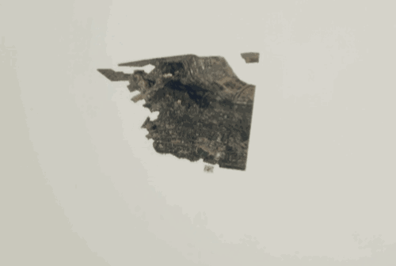
开始飞行
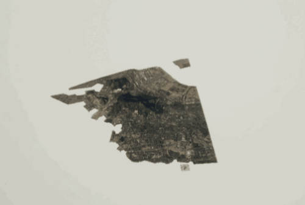
停止飞行
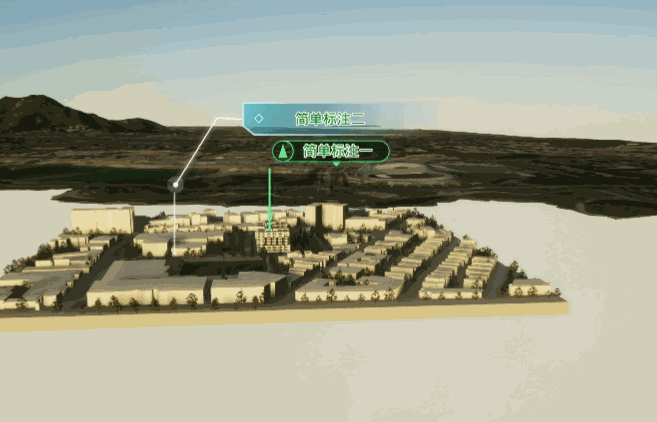
简单标注
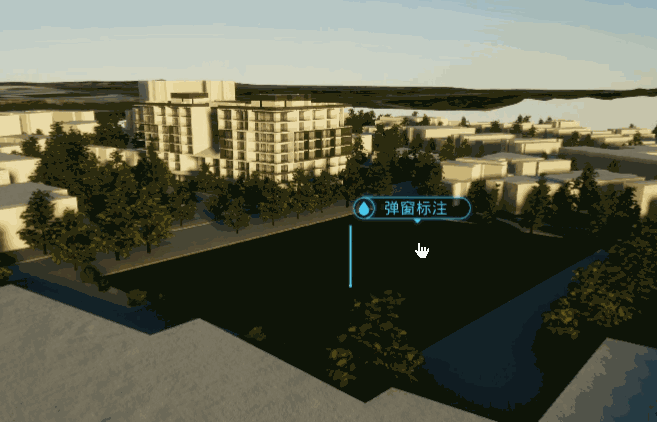
弹窗标注
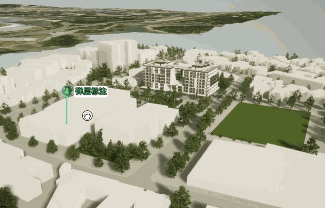
弹层标注
视频弹窗
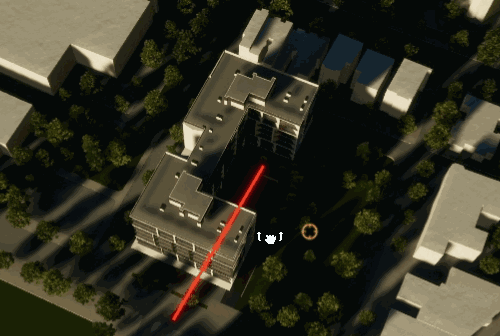
视线通视分析
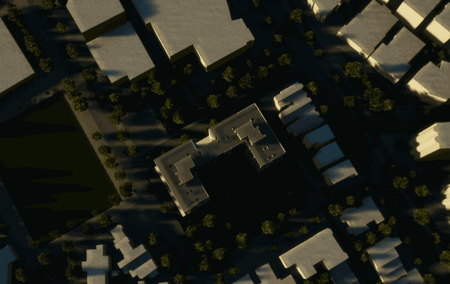
计算模型中心点
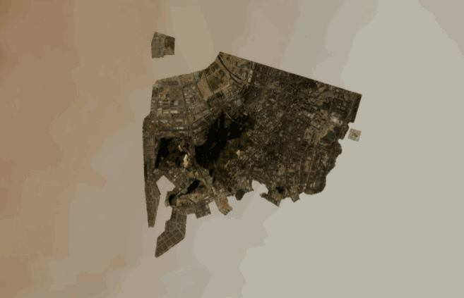
绘制圆形区域
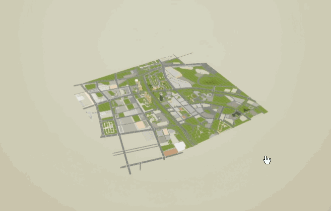
创建三维图层(.3dt)
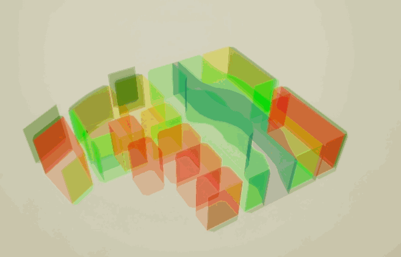
创建矢量图层(.shp)
创建3DTiles图层
地形基坑
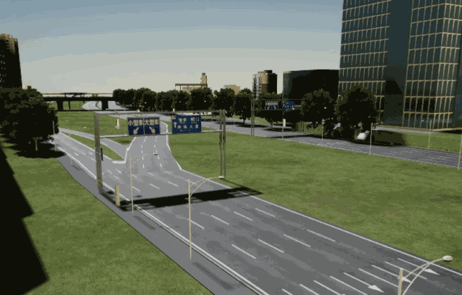
初始化
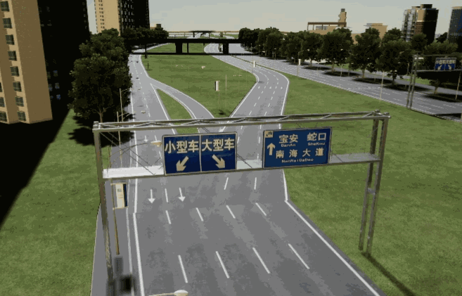
切换模型高亮
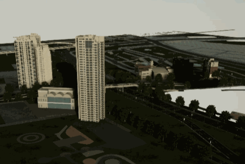
显示/隐藏模型
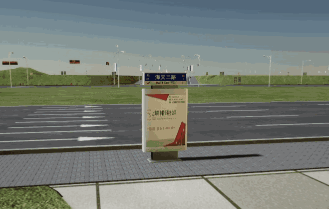
替换/还原模型
旋转移动/还原模型
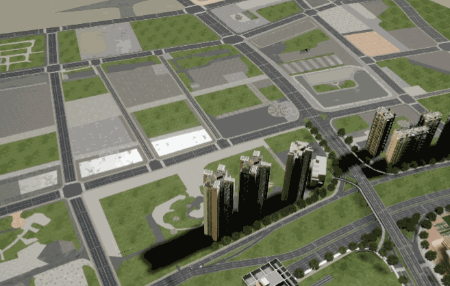
缩放/还原模型
复制多个模型
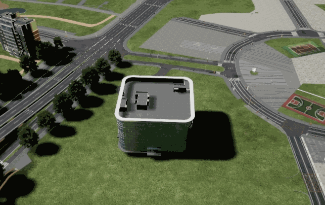
设置/还原模型颜色
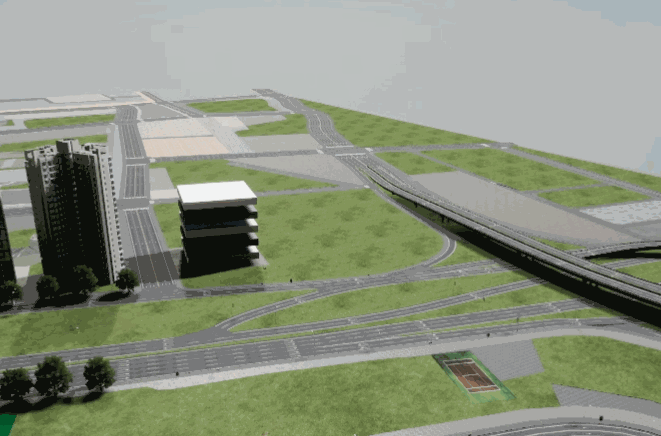
蓝图函数
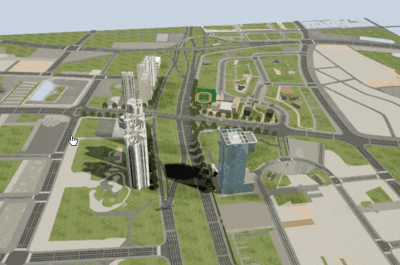
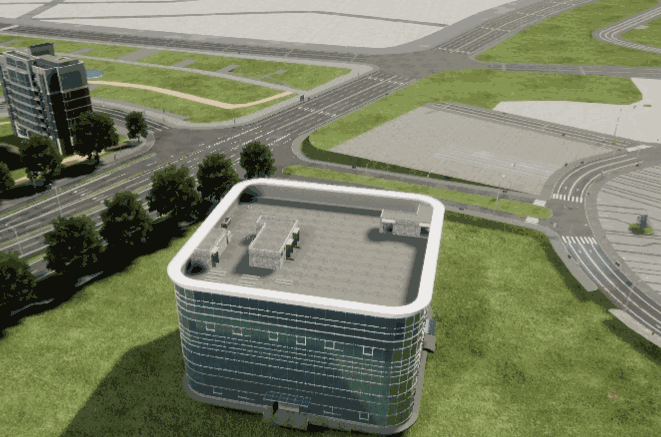
升起楼层
抽出楼层
推入楼层
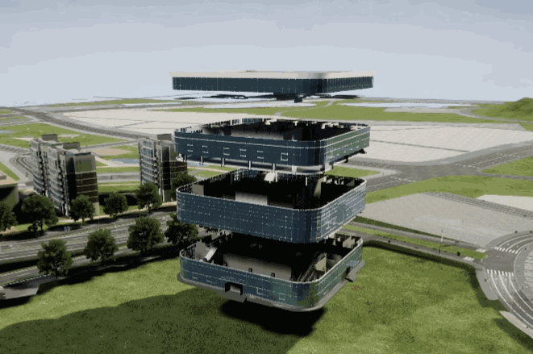
下降楼层
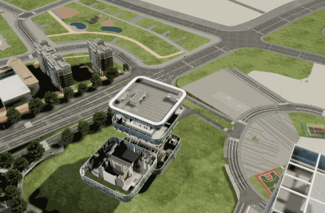
还原楼层
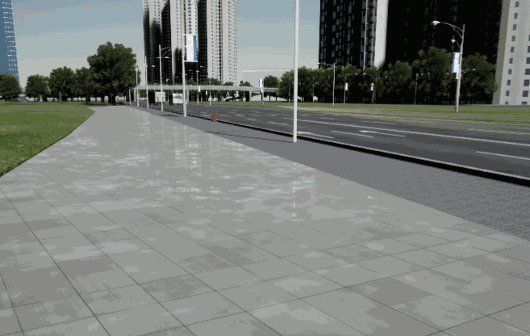
模拟车辆行驶
交通仿真
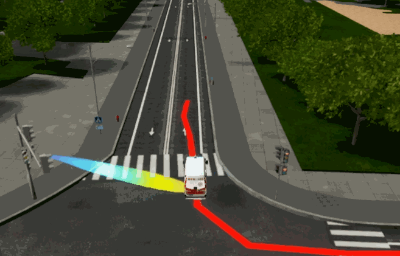
跟随信号源
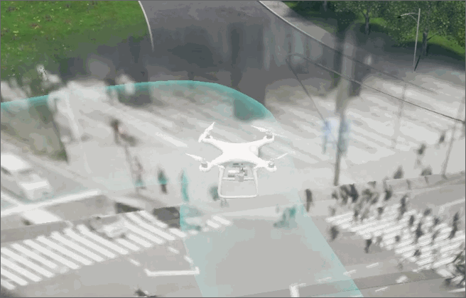
跟随视频投影
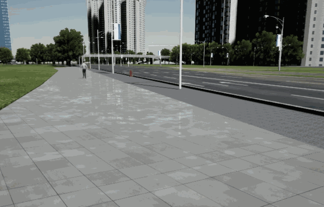
模拟人物步行
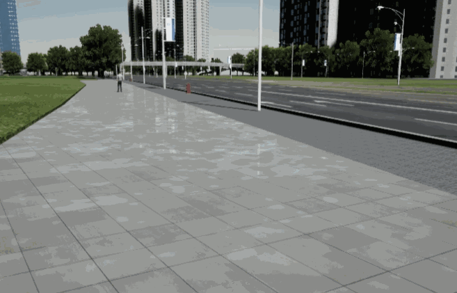
模拟人物跑步
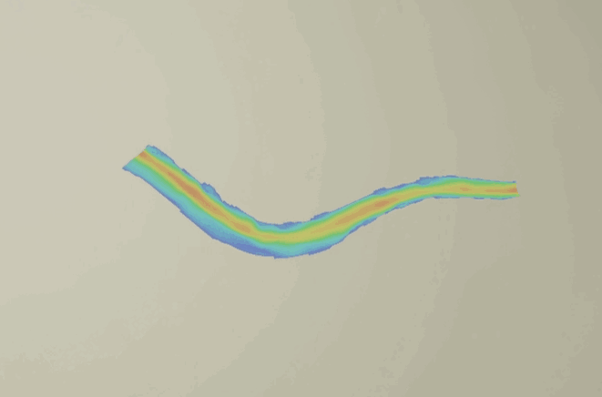
加载静态水流场
加载动态水流场
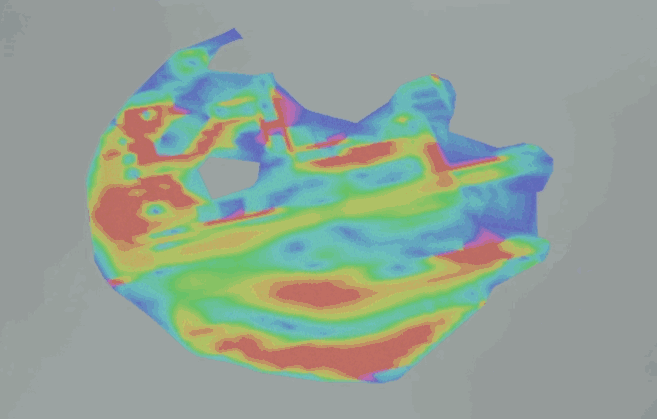
切换材质